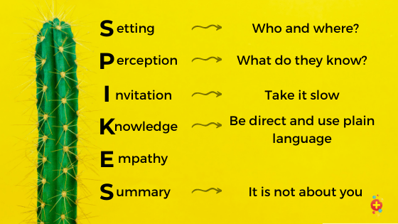
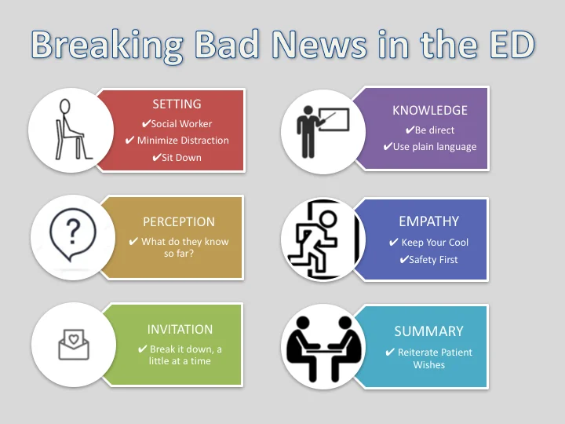

Expanded Nursing Uganda Explanation
Breaking sad news should be understood beyond a short definition. Link the concept to patient history, focused assessment, common risks, nursing priorities, documentation and evaluation of outcomes.
01 **BREAKING OF BAD NEWS**
Breaking bad news to patients and their families is one of the most difficult responsibilities in health care.
Bad news is any news that drastically and negatively alters the patient’s view of his or her future”
“The impact of bad news depends on the size of the gap between the patient’s expectations, including his or her ambitions rind plans, and the (medical) rectify of the situation” (Buckman 1984)
“Breaking bad news is like major surgery whether we like it or not we are inflicting a psychological injury which is every bit as damaging as the amputation of a limb. Like amputation, it requires time, planning and a proper place to carry out the operation.”
02 **Importance of breaking bad news**
- In order to maintain trust.
- In order to reduce uncertainty (the hardest of emotions to bear).
- To prevent instilling false hope.
- To allow for appropriate adjustment (practical and emotional) so that the patient can make informed decisions.
- To prevent a conspiracy of silence which destroys family communication and prevents mutual support.
03 **Skills for breaking bad news**
- Listening
- Observation
- Empathy
- Ability to find right words to use
04 **Barriers to Breaking Bad News**
- Patient barriers: Denial
- Lack of understanding
- Family barriers: Collusion
- Health professional barriers: Feeling incompetent
- Fear of causing pain
- Avoiding getting blamed
- Feeling like they’ve failed the patient by not curing them
- Wanting to shield the patient from distress
- Fear of showing emotions
- Not having enough time
- Fear of saying “I don’t know”
- Having fears of their own illness and death
05 **How to Overcome Barriers to Breaking Bad News**
- Be prepared. Know the patient’s condition and prognosis, and have a plan for how to deliver the news.
- Create a supportive environment. Find a private place where you won’t be interrupted, and allow the patient and their family to bring someone with them for support.
- Start by listening. Ask the patient what they know about their condition, and what they want to know.
- Be honest and direct. Don’t sugarcoat the news, but be respectful of the patient’s feelings.
- Answer questions honestly. The patient and their family may have a lot of questions, so be prepared to answer them as best you can.
- Offer support. Let the patient and their family know that you’re there for them, and that you’ll help them through this difficult time.
06 **Considerations for Breaking Bad News**
- Location : Ensure that there is privacy where possible.
- Ensure that you have time to talk to the patient without rushing, interruptions, or distractions.
- Establish existing knowledge about their condition: Ascertain what the patient knows about their condition.
- Pay attention to specific terms the patient uses.
- Communication skills: Use open-ended questions.
- Use a gentle tone of voice and pace of information.
- Use suitable non-verbal communication.
- Be consistent and use simple language.
- Enable the person to come to their own conclusions.
- Tell the truth : Never lie to a patient.
- Be gentle with the actual breaking of bad news.
- Give hope in the form of what can be undertaken to control symptoms and improve quality of life.
- Do not give false hope of a cure.
- Check whether the patient has understood what has been said.
- Reassurance and support: Give reassurance about continued support.
- Arrange another appointment to see the patient again.
- Encourage the patient to ask questions.
- If the patient agrees, tell the patient and family together.
07 **Methods/protocols of breaking bad news**
- SPIKES method
- BREAKS method
S – Set up the interview : Plan ahead for details such as being sure that you are in a private, comfortable setting, that significant others are involved (if the patient wants that), and that your pager is silenced.
It is worth investing some time and thought in practical issues such as:
- Where will an interview about bad news take place?
- Who will be present?
- How will you start the discussion?
These simple things can help both you and the patient to feel more at ease, which will aid communication later in the conversation.
Where? If at all possible, use a separate room where you can sit down together in privacy. If this is not possible, and the patient is in hospital, try at least to screen off the area where you will be talking. This does not prevent others from listening, but the patient does not have to cope with the bad news in full view of others. You will probably be more comfortable too; don’t forget to minimize interruptions such as mobile phones.
Who? If the patient has visitors when you arrive, find out who they are. Ask the patient whether she/he is happy to continue the interview with the visitor(s) present. Beware that the patient may find it hard to truthfully answer this question while the visitor(s) is (are) listening. Some patients may wish to have a particular relative present when they are told bad news, and this option should also be given. For example: ‘We now have the results of your tests Benjamin, would you like me to explain them to you now, or would you like a friend or relative to be with you when we go through things?’
How do you start?
Firstly, do not forget to ensure that the patient is covered up and comfortable. Greet the patient by name, and introduce yourself if the patient does not know you well. It is useful to begin by creating a rapport. Next you may ask a question such as ‘How are you feeling today?’ This shows that you are interested in his/her condition, gets the patient talking, and allows you to assess something of the patient’s current symptoms (if the patient is in pain, or feeling nauseated, that should be addressed if at all possible before proceeding to a sensitive conversation).
P – Assess the patient’s perception : As described earlier, before you begin an explanation, ask the patient open-ended questions to find out how he or she perceives the medical situation. In this way you can correct any misunderstanding the patient has and tailor the news to the patient’s understanding and expectations.
It is vitally important to the rest of the consultation to establish what the patient already knows about their condition, how serious they think it is, and how they expect it to affect the future. Useful starting phrases include:
- ‘What do you understand about your illness?’
- ‘What have you been told about this illness?’
- ‘Have you been concerned that this may be something serious?’
Listen to the patient’s reply carefully. As well as telling you about his/her understanding of the medical situation, it will give you information about the patient’s emotional state, educational level, and vocabulary. This will help you later to explain things at a level, which is appropriate.
I – Obtain the patient’s invitation : Find out how much detailed information the patient wants regarding diagnosis and prognosis.
In any conversation about bad news, the real issue is not ‘do you want to know’, but ‘at what level do you want to know what is going on’. The majority of patients will know themselves when things are not going well (especially if they have heard no good news). In asking the patient about information sharing, you are simply finding out how much detailed information the patient wishes to know.
Research studies have demonstrated that most patients do desire full disclosure, although they may not want to know all the details at the start. By establishing how much the patient wants to know we are allowing them to exercise their preference.
The following are examples of useful ways to phrase the question:
- ‘Are you the kind of person that likes to know all about their illness?’
- ‘Would you like me to tell you the full details of the diagnosis, even if it is something serious?’
- ‘Would you prefer me to discuss the situation directly with your family?
In all of these, if the patient does not want to hear about the full details you have not cut off all lines of communication. You are saying clearly that you will maintain contact and communication, but not about the details of the disease.
K – Give knowledge and information to the patient : Communicate in ways that help the patient process the information. For example, preface your remarks with a phrase such as, “I’m sorry to tell you that …” or “Unfortunately I have some bad news to tell you.” Use plain language and avoid medical jargon: use the word “spread” instead of “metastasized,” for instance. Provide information in small amounts, use short sentences, and check periodically for understanding.
Now the process of sharing information can commence, aimed at bringing the patient’s perception of the situation closer to the medical facts. Information needs to be given in small chunks, and using a warning shot is very valuable, especially if the news is unexpected.
A useful phrase may be one such as ‘Well, the situation appears more serious….’ followed by a pause then using a narrative approach, possibly describing events leading up to this point.
Understandable language needs to be used, avoiding medical terminology as much as possible. The patient’s understanding of the discussion should be checked frequently and important points can be clarified as necessary. Further clarification may be undertaken by repeating important points and also by using diagrams and writings, if this is appropriate.
E – Address the patient’s emotions with empathic responses : As described earlier, identify the patient’s primary emotion and express that you recognize that what the patient is feeling is a result of the information received. This is the place to use continuer statements such as “I can imagine how scary this must be for you.”
The success or failure of the interview for breaking bad news ultimately depends on how the patient reacts and how you respond to those reactions and feelings. There are many different ways in which a patient may react.
Some of the more common reactions include: disbelief, shock, denial, fear and anxiety, anger and blame, guilt, hope, relief, despair and depression.
S – Strategy and summary : Present treatment or palliative care options, being sure to align your information with what you ascertained (during the assessment of the patient’s perceptions) to be the patient’s knowledge, expectations, and hopes. Providing a clear strategy will lessen the patient’s anxiety and uncertainty.
The final stage of this process consists of organising and planning for the future, which will involve putting together what you know of the patient’s wishes, the medical scenario and the plan of management.
Initially an understanding of the patient’s problem list is essential. Through effective listening and reflecting the patient will know that you have an overall appreciation of their immediate problems. Honesty is very important and the Health Professional should not be unrealistically optimistic about the future. This will avoid future lack of trust or disillusionment from the patient.
This is often an appropriate time to formulate and explain a plan or strategy with the patient, which generally includes preparing for the worst and hoping for the best. Throughout this time the coping strategies of the patient should be identified and reinforced, and this will include identifying other sources of support for the patient and incorporating them. These may be other Health Professionals or close family/friends.
Before leaving the patient it is essential that a contract for the future is made, this will include either arranging a time to see the patient again or advising him/her whom they can contact.
(We can either include this or remove since much has been explained above)
In summary, although there are challenges in giving a patient bad news, a nurse can find satisfaction in providing a therapeutic presence during the patient’s greatest time of need. Communication skills play a very big and important role in breaking bad news.
Breaking bad news to patients is a delicate task that requires clear and empathetic communication. To simplify this process, we present the BREAKS protocol: Background, Rapport, Explore, Announce, Kindling, and Summarize . This mnemonic is easy to remember and can be implemented effectively.
- Background : Before delivering bad news, thoroughly assess the patient’s disease status, emotional well-being, coping skills, educational level, and support system. Cultural and ethnic considerations are crucial. Create a conducive environment by turning off mobile phones, maintaining eye contact, and utilizing a co-worker’s assistance for transcribing the conversation.
- Rapport : Establish a positive rapport with the patient while avoiding a patronizing attitude. Build trust through open-ended questions about the patient’s current condition. If the patient is unprepared for bad news, allow them to discuss their well-being before initiating the conversation.
- Explore : Start the conversation by exploring what the patient already knows about their illness. This approach confirms the news rather than abruptly breaking it. Discuss their understanding of the disease, diagnosis, and potential conflicts between their beliefs and the diagnosis. Involve significant others in decision-making if permitted by the patient.
- Announce : Provide a warning shot to soften the impact of the news. Use clear and straightforward language, avoiding medical jargon. Seek consent before announcing the diagnosis. Mirror the patient’s emotions to establish a connection, reflecting their embarrassment, agony, and fear.
- Kindling : Understand that patients react differently to their diagnosis, exhibiting responses such as tears, silence, or denial. Allow space for the expression of emotions. Ensure active listening by engaging the patient with questions and encouraging them to recount their understanding. Avoid unrealistic treatment options and tailor responses to their questions.
- Summarize : Conclude the session by summarizing the key points discussed and addressing the patient’s concerns. Emphasize future treatment and care plans, both emotionally and practically. Provide a written summary, as anxious patients retain limited information. Offer round-the-clock availability and encourage the patient to call for any reason. Maintain an optimistic outlook and, if requested, assist in sharing information with relatives. Set a review date and ensure the patient’s safety before they leave the room.
- Step Description
- 1 Prepare well. Know all the facts before meeting the patient/family.
- 2 Introduce yourself and let others introduce themselves to you and state their relationship to the patient.
- 3 Review and determine how much the patient already knows by asking for a summary of events. Do not make assumptions.
- 4 Check that the patient/family wants more information and how much more. Offer an update and give them the option to stop at any point.
- 5 Indicate that the information to be given is serious. Allow a pause for the patient to respond.
- 6 Present the bad news in a direct and concise manner, using lay terms to avoid misunderstanding.
- 7 Sit quietly and wait for the patient to respond.
- 8 If there is no response after a prolonged silence, gently encourage the patient to share their thoughts.
- 9 Encourage the expression of feelings and provide a supportive environment.
- 10 Confirm and regulate the patient’s feelings, offering personal statements if appropriate to establish empathy.
- 11 Listen to concerns and ask questions, such as “What are your main concerns at the moment?” or “What does this mean to you?”
- 12 Provide more information if requested, systematically and using simple language.
- 13 Assess the patient’s thoughts of self-harm and take appropriate action if necessary.
- 14 Consider involving social workers, religious leaders, or other support systems if needed.
- 15 Wind down the session by summarizing the issues raised and discussing the next steps with the family.
- 16 Make yourself available for further discussions about the illness as needed.
- 17 Provide a follow-up plan to address additional questions or concerns that may arise.
Patient’s reactions to bad news may include denial, disbelief, shock, displacement ( Refer to the section on bereavement )
When bad news is broken patients and their families will react in various ways:
- Crying Denial
- Blame Anger
- Guilt Sadness
- Bargaining Anxiety
- A sense of loss Relief
- Fear
Handling difficult questions
Some hints, (Faulker 1998)
- Check the reason for the question – “What makes you ask that question?’
- Show interest in the patient’s ideas – How does it appear to you?”
- Confirm or elaborate – You are probably right’
- Be prepared to admit you do not know
- Empathize – Yes it must seem unfair to you’
Handling your own emotions
When breaking bad news, it is important that you are able to handle your own emotions as it is not an easy thing to do. Some things that will help include:
- Self-awareness of your own abilities and limits
- Team support
- Clinical supervision
- Reflective practice
- Continue to develop your skills.
- Remember it’s not your bad news
- According to the SPIKES protocol, what does the “S” stand for? a) Set up the interview b) Strategy and summary c) Assess the patient’s perception d) Address the patient’s emotions with empathic responses Answer: a) Set up the interview
- Which of the following is NOT a skill required for breaking bad news? a) Listening b) Empathy c) Avoiding eye contact d) Observation Answer: c) Avoiding eye contact
- What is the purpose of the BREAKS protocol for breaking bad news? a) To simplify the process and make it more effective b) To create barriers and obstacles c) To confuse the patient and their family d) To increase uncertainty and anxiety Answer: a) To simplify the process and make it more effective
- Patient barriers to breaking bad news may include: a) Denial b) Lack of knowledge c) Feeling competent d) Fear of causing pain Answer: a) Denial
- How should healthcare professionals handle difficult questions when breaking bad news? a) Show interest in the patient’s ideas b) Confirm or elaborate c) Admit if they don’t know d) All of the above Answer: d) All of the above 6. Which step in the SPIKES protocol involves assessing the patient’s perception of the medical situation? a) S – Set up the interview b) P – Assess the patient’s perception c) I – Obtain the patient’s invitation d) K – Give knowledge and information to the patient Answer: b) P – Assess the patient’s perception
08 Nursing Uganda Clinical Lens
Use Breaking sad news as a practical nursing topic, not only a memorized definition. Focus on comfort, dignity, symptom control, communication and family support.
- What to understand first: define breaking sad news, identify the normal or expected pattern, then explain what changes when the patient is unwell.
- Why it matters in care: the nurse must recognize risk early, explain findings clearly, document accurately and know when to escalate.
- How to revise it: connect each point to assessment, nursing diagnosis or care problem, intervention, rationale and evaluation.
09 Assessment Guide
- Pain and other symptoms, function, sleep, appetite, mood, spiritual distress and family concerns.
- Medication response, side effects, wound or skin needs and end-of-life preferences.
- Caregiver burden, home resources and urgent red flags.
10 Nursing Priorities, Rationales and Outcomes
- Relieve distressing symptoms and prevent avoidable suffering.
- Communicate honestly, respectfully and at the patient's pace.
- Support family care, medication access, dignity and continuity.
The rationale for these priorities is patient safety: nursing actions should prevent deterioration, reduce discomfort, support recovery and create clear evidence for the next caregiver.
- Expected outcome: Symptoms are better controlled, patient preferences are respected and the family knows when to seek help.
11 Patient Teaching and Revision Check
- Explain breaking sad news in simple language the patient or caregiver can repeat back.
- Teach warning signs, medicine or follow-up instructions, hygiene or lifestyle points where relevant.
- For exams, prepare a short answer using: definition, causes or risk factors, signs, assessment, management, complications and prevention.
- For ward practice, document baseline findings, actions taken, patient response and the plan for review.
Illustrations and Diagrams (7)




Related Video Lectures
Watch nursing lecture videos on YouTube for this topic. Opens in a new tab.
Watch on YouTubeExternal link: YouTube may use its own cookies and terms. Nursing Uganda is not affiliated with YouTube.